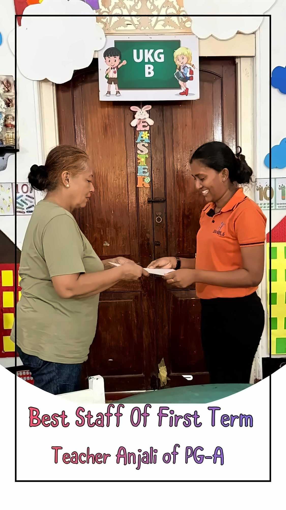

A Montessori home built on love and trust
Daniels began with one classroom and a simple promise to Moratuwa parents: we will care for your child the way we care for our own.

How Daniels began
Founder Roma Jayaratne opened Daniels in 2014: confirm with a lifelong devotion to early childhood. Co-founder Shakira de Cruze joined her to grow it into a full AMI Montessori pre-school.
Today 25 teachers and staff care for children from Playgroup to Upper KG. Many of our families now send younger brothers and sisters, and that trust means more to us than anything.
Our founders
Roma Jayaratne
Roma leads Daniels with warmth and high standards, and still greets families at the gate each morning. bio & photo
Shakira de Cruze
Shakira leads our curriculum, events and parent partnerships, and is the creative energy behind our celebrations. bio & photo
The people your child will see every day
AMI-trained, first-aid certified and chosen for their kindness. placeholder portraits

Happy teachers, happy children
We celebrate our team the way we celebrate our children. Each term a Best Staff Member is honoured for their dedication. Congratulations to Teacher Anjali of PG-A.
- AMI Montessori trained directresses
- Registered pre-school confirm
- First-aid trained staff
- CCTV and secure, ID-based pick-up
Come and see us
The best way to decide is to visit. Meet our teachers, see the classrooms, and let your child explore.